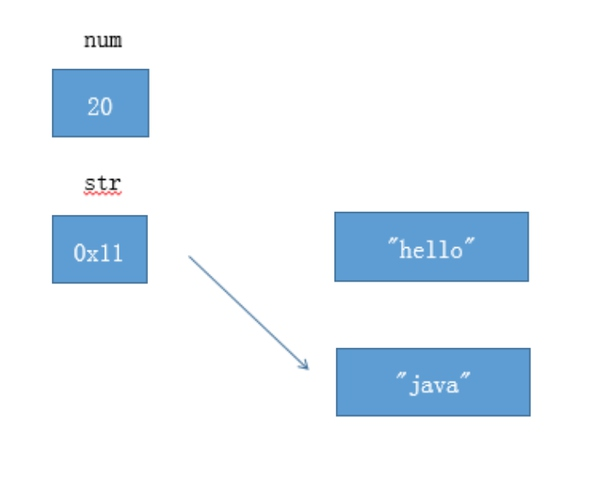
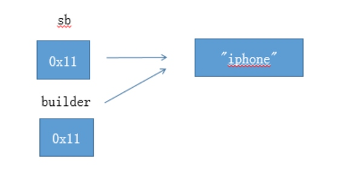
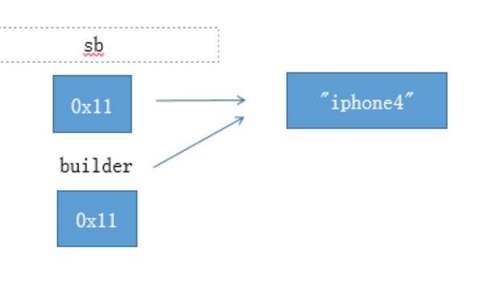
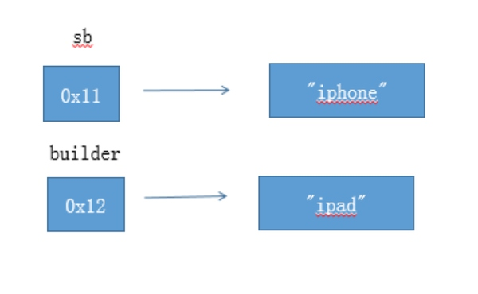

<!DOCTYPE html>
<html lang="zh-CN">
<head><meta name="generator" content="Hexo 3.8.0">

    <!--[if lt IE 9]>
        <style>body {display: none; background: none !important} </style>
        <meta http-equiv="Refresh" Content="0; url=//outdatedbrowser.com/" />
    <![endif]-->

<meta charset="utf-8">
<meta http-equiv="X-UA-Compatible" content="IE=edge, chrome=1">
<meta name="viewport" content="width=device-width, initial-scale=1, maximum-scale=1, user-scalable=no">
<meta name="format-detection" content="telephone=no">
<meta name="author" content="康兴华">


<meta name="description" content="首先，不要纠结于Pass By Value 和 Pass By Reference 的字面上的意义，否则很容易陷入所谓的“一切传引用其本质上是传值”这种并不能解决问题毫无意义论战中。更何况，要想知道Java到底是传值还是传引用，起码你要先知道传值和传引用的准确含义吧？可是如果你已经知道了这两个名字的准确含义，那么你自己就能判断Java到底是传值还传引用。这个好像用大学的名词来解释高中的题目，对于初">
<meta name="keywords" content="笔记">
<meta property="og:type" content="article">
<meta property="og:title" content="Java中的参数传递——值传递、引用传递">
<meta property="og:url" content="http://kxh.ink/2017/02/15/Pass-By-Value/index.html">
<meta property="og:site_name" content="康兴华">
<meta property="og:description" content="首先，不要纠结于Pass By Value 和 Pass By Reference 的字面上的意义，否则很容易陷入所谓的“一切传引用其本质上是传值”这种并不能解决问题毫无意义论战中。更何况，要想知道Java到底是传值还是传引用，起码你要先知道传值和传引用的准确含义吧？可是如果你已经知道了这两个名字的准确含义，那么你自己就能判断Java到底是传值还传引用。这个好像用大学的名词来解释高中的题目，对于初">
<meta property="og:locale" content="zh-CN">
<meta property="og:image" content="http://kxh.ink/2017/02/15/Pass-By-Value/287c0efbb179638cf4cf27cbfdf3e746_b.jpg">
<meta property="og:image" content="http://kxh.ink/2017/02/15/Pass-By-Value/d8b82e07ea21375ca6b300f9162aa95f_b.jpg">
<meta property="og:image" content="http://kxh.ink/2017/02/15/Pass-By-Value/ff2ede9c6c55568d42425561f25a0fd7_b.jpg">
<meta property="og:image" content="http://kxh.ink/2017/02/15/Pass-By-Value/d8b82e07ea21375ca6b300f9162aa95f_b.jpg">
<meta property="og:image" content="http://kxh.ink/2017/02/15/Pass-By-Value/46fa5f10cc135a3ca087dae35a5211bd_b.jpg">
<meta property="og:updated_time" content="2018-10-22T06:34:56.119Z">
<meta name="twitter:card" content="summary">
<meta name="twitter:title" content="Java中的参数传递——值传递、引用传递">
<meta name="twitter:description" content="首先，不要纠结于Pass By Value 和 Pass By Reference 的字面上的意义，否则很容易陷入所谓的“一切传引用其本质上是传值”这种并不能解决问题毫无意义论战中。更何况，要想知道Java到底是传值还是传引用，起码你要先知道传值和传引用的准确含义吧？可是如果你已经知道了这两个名字的准确含义，那么你自己就能判断Java到底是传值还传引用。这个好像用大学的名词来解释高中的题目，对于初">
<meta name="twitter:image" content="http://kxh.ink/2017/02/15/Pass-By-Value/287c0efbb179638cf4cf27cbfdf3e746_b.jpg">

<link rel="apple-touch-icon" href="/apple-touch-icon.png">


    <link rel="alternate" href="/atom.xml" title="康兴华" type="application/atom+xml">


    <link rel="shortcut icon" href="/favicon.png">


    <link href="//cdn.bootcss.com/animate.css/3.5.1/animate.min.css" rel="stylesheet">


    <link href="//cdn.bootcss.com/fancybox/2.1.5/jquery.fancybox.min.css" rel="stylesheet">


    <script src="//cdn.bootcss.com/pace/1.0.2/pace.min.js"></script>
    <link href="//cdn.bootcss.com/pace/1.0.2/themes/blue/pace-theme-minimal.css" rel="stylesheet">


<link rel="stylesheet" href="/css/style.css">


<link href="//cdn.bootcss.com/font-awesome/4.6.3/css/font-awesome.min.css" rel="stylesheet">


<title>Java中的参数传递——值传递、引用传递 | 康兴华</title>

<script src="//cdn.bootcss.com/jquery/2.2.4/jquery.min.js"></script>
<script src="//cdn.bootcss.com/clipboard.js/1.5.10/clipboard.min.js"></script>

<script>
    var yiliaConfig = {
        fancybox: true,
        animate: true,
        isHome: false,
        isPost: true,
        isArchive: false,
        isTag: false,
        isCategory: false,
        fancybox_js: "//cdn.bootcss.com/fancybox/2.1.5/jquery.fancybox.min.js",
        scrollreveal: "//cdn.bootcss.com/scrollReveal.js/3.1.4/scrollreveal.min.js",
        search: true
    }
</script>


    <script> yiliaConfig.jquery_ui = [false]; </script>


    <script> yiliaConfig.rootUrl = "\/";</script>


</head></html>
<body>
  <div id="container">
    <div class="left-col">
    <div class="overlay"></div>
<div class="intrude-less">
    <header id="header" class="inner">
        <a href="/" class="profilepic">
            
        </a>
        <hgroup>
          <h1 class="header-author"><a href="/">康兴华</a></h1>
        </hgroup>

        

        
            <form id="search-form">
            <input type="text" id="local-search-input" name="q" placeholder="search..." class="search form-control" autocomplete="off" autocorrect="off" searchonload="true">
            <i class="fa fa-times" onclick="resetSearch()"></i>
            </form>
            <div id="local-search-result"></div>
            <p class="no-result">No results found <i class="fa fa-spinner fa-pulse"></i></p>
        


        
            <div id="switch-btn" class="switch-btn">
                <div class="icon">
                    <div class="icon-ctn">
                        <div class="icon-wrap icon-house" data-idx="0">
                            <div class="birdhouse"></div>
                            <div class="birdhouse_holes"></div>
                        </div>
                        <div class="icon-wrap icon-ribbon hide" data-idx="1">
                            <div class="ribbon"></div>
                        </div>
                        
                        <div class="icon-wrap icon-link hide" data-idx="2">
                            <div class="loopback_l"></div>
                            <div class="loopback_r"></div>
                        </div>
                        
                        
                        <div class="icon-wrap icon-me hide" data-idx="3">
                            <div class="user"></div>
                            <div class="shoulder"></div>
                        </div>
                        
                    </div>
                    
                </div>
                <div class="tips-box hide">
                    <div class="tips-arrow"></div>
                    <ul class="tips-inner">
                        <li>菜单</li>
                        <li>标签</li>
                        
                        <li>友情链接</li>
                        
                        
                        <li>关于我</li>
                        
                    </ul>
                </div>
            </div>
        

        <div id="switch-area" class="switch-area">
            <div class="switch-wrap">
                <section class="switch-part switch-part1">
                    <nav class="header-menu">
                        <ul>
                        
                            <li><a href="/">主页</a></li>
                        
                            <li><a href="/archives/">所有文章</a></li>
                        
                            <li><a href="/tags/">标签云</a></li>
                        
                            <li><a href="/about/">关于我</a></li>
                        
                        </ul>
                    </nav>
                    <nav class="header-nav">
                        <ul class="social">
                            
                                <a class="fa Email" href="mailto:kangxinghua@gmail.com" title="Email"></a>
                            
                                <a class="fa GitHub" href="https://github.com/kangxinghua" title="GitHub"></a>
                            
                                <a class="fa RSS" href="/atom.xml" title="RSS"></a>
                            
                        </ul>
                    </nav>
                </section>
                
                
                <section class="switch-part switch-part2">
                    <div class="widget tagcloud" id="js-tagcloud">
                        <ul class="tag-list"><li class="tag-list-item"><a class="tag-list-link" href="/tags/Java-并发编程实战/">Java 并发编程实战</a></li><li class="tag-list-item"><a class="tag-list-link" href="/tags/笔记/">笔记</a></li></ul>
                    </div>
                </section>
                
                
                
                <section class="switch-part switch-part3">
                    <div id="js-friends">
                    
                      <a class="main-nav-link switch-friends-link" href="https://hexo.io">Hexo</a>
                    
                      <a class="main-nav-link switch-friends-link" href="https://pages.github.com/">GitHub</a>
                    
                      <a class="main-nav-link switch-friends-link" href="http://moxfive.xyz/">MOxFIVE</a>
                    
                    </div>
                </section>
                

                
                
                <section class="switch-part switch-part4">
                
                    <div id="js-aboutme">专注于前端</div>
                </section>
                
            </div>
        </div>
    </header>                
</div>
    </div>
    <div class="mid-col">
      <nav id="mobile-nav">
      <div class="overlay">
          <div class="slider-trigger"></div>
          <h1 class="header-author js-mobile-header hide"><a href="/" title="回到主页">康兴华</a></h1>
      </div>
    <div class="intrude-less">
        <header id="header" class="inner">
            <a href="/" class="profilepic">
                
            </a>
            <hgroup>
              <h1 class="header-author"><a href="/" title="回到主页">康兴华</a></h1>
            </hgroup>
            
            <nav class="header-menu">
                <ul>
                
                    <li><a href="/">主页</a></li>
                
                    <li><a href="/archives/">所有文章</a></li>
                
                    <li><a href="/tags/">标签云</a></li>
                
                    <li><a href="/about/">关于我</a></li>
                
                <div class="clearfix"></div>
                </ul>
            </nav>
            <nav class="header-nav">
                        <ul class="social">
                            
                                <a class="fa Email" target="_blank" href="mailto:kangxinghua@gmail.com" title="Email"></a>
                            
                                <a class="fa GitHub" target="_blank" href="https://github.com/kangxinghua" title="GitHub"></a>
                            
                                <a class="fa RSS" target="_blank" href="/atom.xml" title="RSS"></a>
                            
                        </ul>
            </nav>
        </header>                
    </div>
    <link class="menu-list" tags="标签" friends="友情链接" about="关于我">
</nav>
      <div class="body-wrap"><article id="post-Pass-By-Value" class="article article-type-post" itemscope="" itemprop="blogPost">
  
    <div class="article-meta">
      <a href="/2017/02/15/Pass-By-Value/" class="article-date">
      <time datetime="2017-02-15T01:59:42.000Z" itemprop="datePublished">2017-02-15</time>
</a>


    </div>
  
  <div class="article-inner">
    
      <input type="hidden" class="isFancy">
    
    
      <header class="article-header">
        
  
    <h1 class="article-title" itemprop="name">
      Java中的参数传递——值传递、引用传递
    </h1>
  

      </header>
      
      <div class="article-info article-info-post">
        

        
    <div class="article-tag tagcloud">
        <ul class="article-tag-list"><li class="article-tag-list-item"><a class="article-tag-list-link" href="/tags/笔记/">笔记</a></li></ul>
    </div>

        <div class="clearfix"></div>
      </div>
      
    
    <div class="article-entry" itemprop="articleBody">
      
          
        <p>首先，不要纠结于Pass By Value 和 Pass By Reference 的字面上的意义，否则很容易陷入所谓的“一切传引用其本质上是传值”这种并不能解决问题毫无意义论战中。更何况，要想知道Java到底是传值还是传引用，起码你要先知道传值和传引用的准确含义吧？可是如果你已经知道了这两个名字的准确含义，那么你自己就能判断Java到底是传值还传引用。这个好像用大学的名词来解释高中的题目，对于初学者根本没有任何意义。<br><a id="more"></a></p>
<ul>
<li>搞清楚基本类型和引用类型的不同之处<figure class="highlight java"><table><tr><td class="gutter"><pre><span class="line">1</span><br><span class="line">2</span><br><span class="line">3</span><br><span class="line">4</span><br><span class="line">5</span><br><span class="line">6</span><br><span class="line">7</span><br><span class="line">8</span><br><span class="line">9</span><br><span class="line">10</span><br></pre></td><td class="code"><pre><span class="line"><span class="keyword">int</span> num = <span class="number">10</span>;</span><br><span class="line">String str = <span class="string">"hello"</span>;</span><br><span class="line">``` </span><br><span class="line">  </span><br><span class="line">如图所示，num是基本类型，值就直接保存在变量中。而str是引用类型，变量中保持的只是实际对象的地址。一般称这种变量为“引用”，引用指向实际对象，实际对象中保存着内容。</span><br><span class="line"></span><br><span class="line">- 搞清楚赋值运算符（=）的作用  </span><br><span class="line">``` java </span><br><span class="line">num = <span class="number">20</span>;</span><br><span class="line">str = <span class="string">"java"</span>;</span><br></pre></td></tr></table></figure>
</li>
</ul>
<p> </p>
<p>对于基础类型num，赋值运算符会直接改变变量的值，原来的值被覆盖掉。<br>对于引用类型str，赋值运算符会改变引用中所保存的地址，原来的地址被覆盖掉。<strong>但是原来的对象不会被改变（重要）。</strong><br>如上图所示，“hello” 字符串对象没有被改变。（没有被任何引用所指向的对象是垃圾，会被垃圾回收器回收）  </p>
<ul>
<li>调用方法时候发生了什么？<strong>参数传递基本上就是赋值操作。</strong><figure class="highlight java"><table><tr><td class="gutter"><pre><span class="line">1</span><br><span class="line">2</span><br><span class="line">3</span><br><span class="line">4</span><br><span class="line">5</span><br><span class="line">6</span><br><span class="line">7</span><br><span class="line">8</span><br><span class="line">9</span><br><span class="line">10</span><br><span class="line">11</span><br><span class="line">12</span><br><span class="line">13</span><br><span class="line">14</span><br><span class="line">15</span><br><span class="line">16</span><br><span class="line">17</span><br><span class="line">18</span><br><span class="line">19</span><br><span class="line">20</span><br><span class="line">21</span><br><span class="line">22</span><br><span class="line">23</span><br><span class="line">24</span><br><span class="line">25</span><br></pre></td><td class="code"><pre><span class="line"><span class="comment">//第一个例子：基础类型 </span></span><br><span class="line"><span class="function"><span class="keyword">void</span> <span class="title">foo</span><span class="params">(<span class="keyword">int</span> value)</span></span>&#123;</span><br><span class="line">    value = <span class="number">100</span>；</span><br><span class="line">&#125;</span><br><span class="line">foo(num);<span class="comment">//num 没有被改变 </span></span><br><span class="line"></span><br><span class="line"><span class="comment">//第二个例子：没有提供改变自身方法的引用类型 </span></span><br><span class="line"><span class="function"><span class="keyword">void</span> <span class="title">foo</span><span class="params">(String text)</span></span>&#123;</span><br><span class="line">    text =<span class="string">"windows"</span>;</span><br><span class="line">&#125;</span><br><span class="line">foo(str);<span class="comment">//str 也没被改变 </span></span><br><span class="line"></span><br><span class="line"><span class="comment">//第三个例子：提供了改变自身方法的引用类型</span></span><br><span class="line">StringBuilder sb = <span class="keyword">new</span> StringBuilder(<span class="string">"iphone"</span>);</span><br><span class="line"><span class="function"><span class="keyword">void</span> <span class="title">foo</span><span class="params">(StringBuilder builder)</span></span>&#123;</span><br><span class="line">    builder.append(<span class="string">"4"</span>);</span><br><span class="line">&#125; </span><br><span class="line">foo(sb);<span class="comment">//sb 被改变了，变成了“iphone4”。</span></span><br><span class="line"></span><br><span class="line"><span class="comment">//第四个例子：提供了改变自身方法的引用类型，但是不是使用，而是使用赋值运算符。</span></span><br><span class="line">StringBuilder sb = <span class="keyword">new</span> StringBuilder(<span class="string">"iphone"</span>);</span><br><span class="line"><span class="function"><span class="keyword">void</span> <span class="title">foo</span><span class="params">(StringBuilder builder)</span></span>&#123;</span><br><span class="line">    builder = <span class="keyword">new</span> StringBuilder(<span class="string">"ipad"</span>);</span><br><span class="line">&#125;</span><br><span class="line">foo(sb);<span class="comment">//sb 没有被改变，还是“iphone”。</span></span><br></pre></td></tr></table></figure>
</li>
</ul>
<p>重点理解为什么，第三个例子和第四例子结果不同？<br>下面是第三个例子的图解：<br></p>
<p>builder.append(“4”)之后</p>
<p></p>
<p>下面是第四个例子的图解：</p>
<p></p>
<p>builder = new StringBuilder(“ipad”);之后</p>
<p> </p>
<p>2017-02-15 11:09:20 康兴华<br>发现以前一直以来的理解都是错误的，单纯说方法传递是传值和和传引用毫无意义的。</p>

      
    </div>
    
  </div>
  
    
    <div class="copyright">
        <p><span>本文标题:</span><a href="/2017/02/15/Pass-By-Value/">Java中的参数传递——值传递、引用传递</a></p>
        <p><span>文章作者:</span><a href="/" title="回到主页">康兴华</a></p>
        <p><span>发布时间:</span>2017-02-15, 09:59:42</p>
        <p><span>最后更新:</span>2018-10-22, 14:34:56</p>
        <p>
            <span>原始链接:</span><a class="post-url" href="/2017/02/15/Pass-By-Value/" title="Java中的参数传递——值传递、引用传递">http://kxh.ink/2017/02/15/Pass-By-Value/</a>
            <span class="copy-path" data-clipboard-text="原文: http://kxh.ink/2017/02/15/Pass-By-Value/　　作者: 康兴华" title="点击复制文章链接"><i class="fa fa-clipboard"></i></span>
            <script> var clipboard = new Clipboard('.copy-path'); </script>
        </p>
        <p>
            <span>许可协议:</span><i class="fa fa-creative-commons"></i> <a rel="license" href="http://creativecommons.org/licenses/by-nc-sa/4.0/" title="CC BY-NC-SA 4.0 International" target="_blank">"署名-非商用-相同方式共享 4.0"</a> 转载请保留原文链接及作者。
        </p>
    </div>


    <nav id="article-nav">
        
            <div id="article-nav-newer" class="article-nav-title">
                <a href="/2017/02/16/Daemon-Thread/">
                    守护线程
                </a>
            </div>
        
        
            <div id="article-nav-older" class="article-nav-title">
                <a href="/2017/01/13/happen-before/">
                    Java 内存模型
                </a>
            </div>
        
    </nav>

  
</article>

    <div id="toc" class="toc-article">
        <strong class="toc-title">文章目录</strong>
        
            
        
    </div>
    <style>
        .left-col .switch-btn,
        .left-col .switch-area {
            display: none;
        }
        .toc-level-3 i,
        .toc-level-3 ol {
            display: none !important;
        }
    </style>

    <input type="button" id="tocButton" value="隐藏目录" title="点击按钮隐藏或者显示文章目录">

    <script>
        yiliaConfig.toc = ["隐藏目录", "显示目录", !!"false"];
    </script>


    
<div class="share">
    
        <div class="bdsharebuttonbox">
            <a href="#" class="fa fa-twitter bds_twi" data-cmd="twi" title="分享到推特"></a>
            <a href="#" class="fa fa-weibo bds_tsina" data-cmd="tsina" title="分享到新浪微博"></a>
            <a href="#" class="fa fa-qq bds_sqq" data-cmd="sqq" title="分享给 QQ 好友"></a>
            <a href="#" class="fa fa-files-o bds_copy" data-cmd="copy" title="复制网址"></a>
            <a href="#" class="fa fa fa-envelope-o bds_mail" data-cmd="mail" title="通过邮件分享"></a>
            <a href="#" class="fa fa-weixin bds_weixin" data-cmd="weixin" title="生成文章二维码"></a>
            <a href="#" class="fa fa-share-alt bds_more" data-cmd="more"></a>
        </div>
        <script>
            window._bd_share_config={
                "common":{"bdSnsKey":{},"bdText":"Java中的参数传递——值传递、引用传递　| 康兴华　","bdMini":"2","bdMiniList":false,"bdPic":"","bdStyle":"0","bdSize":"24"},"share":{}};with(document)0[(getElementsByTagName('head')[0]||body).appendChild(createElement('script')).src='http://bdimg.share.baidu.com/static/api/js/share.js?v=89860593.js?cdnversion='+~(-new Date()/36e5)];
        </script>
    

    
</div>


    


    <div class="scroll" id="post-nav-button">
        
            <a href="/2017/02/16/Daemon-Thread/" title="上一篇: 守护线程">
                <i class="fa fa-angle-left"></i>
            </a>
        

        <a title="文章列表"><i class="fa fa-bars"></i><i class="fa fa-times"></i></a>

        
            <a href="/2017/01/13/happen-before/" title="下一篇: Java 内存模型">
                <i class="fa fa-angle-right"></i>
            </a>
        
    </div>

    <ul class="post-list"><li class="post-list-item"><a class="post-list-link" href="/2018/11/12/spring-cloud-principle/">Spring Cloud 使用概述</a></li><li class="post-list-item"><a class="post-list-link" href="/2018/11/08/why-is-redis/">为什么分布式一定要有redis?</a></li><li class="post-list-item"><a class="post-list-link" href="/2018/11/02/mysql-transaction/README/">mysql-transaction/README</a></li><li class="post-list-item"><a class="post-list-link" href="/2018/11/02/mysql-transaction/">MySQL 四种事务隔离级的说明</a></li><li class="post-list-item"><a class="post-list-link" href="/2018/11/01/how-to-calculate-threadpool-size/README/">how-to-calculate-threadpool-size/README</a></li><li class="post-list-item"><a class="post-list-link" href="/2018/10/31/how-to-calculate-threadpool-size/">如何合理地估算线程池大小？</a></li><li class="post-list-item"><a class="post-list-link" href="/2018/09/19/HashMap-System-Learning/">深入理解HashMap</a></li><li class="post-list-item"><a class="post-list-link" href="/2018/06/24/Lock-Condition/">显示锁（Lock）及Condition的学习与使用</a></li><li class="post-list-item"><a class="post-list-link" href="/2018/06/21/Callable-Future-FutureTask/">Callable和Future、FutureTask的使用</a></li><li class="post-list-item"><a class="post-list-link" href="/2018/05/04/ThreadPoolPrinciple/">从使用到原理学习Java线程池</a></li><li class="post-list-item"><a class="post-list-link" href="/2017/02/16/Daemon-Thread/">守护线程</a></li><li class="post-list-item"><a class="post-list-link" href="/2017/02/15/Pass-By-Value/">Java中的参数传递——值传递、引用传递</a></li><li class="post-list-item"><a class="post-list-link" href="/2017/01/13/happen-before/">Java 内存模型</a></li><li class="post-list-item"><a class="post-list-link" href="/2017/01/06/summary-one/">第一部分总结</a></li><li class="post-list-item"><a class="post-list-link" href="/2017/01/05/synchronization-tool-class/">同步工具类</a></li><li class="post-list-item"><a class="post-list-link" href="/2016/12/22/DuiXiangGongXiang/">对象的共享</a></li><li class="post-list-item"><a class="post-list-link" href="/2016/12/06/BingFaJianShi/">并发简史</a></li><li class="post-list-item"><a class="post-list-link" href="/2016/11/15/syn-jmm-visibility/">同步和Java内存模型 (三)可见性</a></li><li class="post-list-item"><a class="post-list-link" href="/2016/11/15/syn-jmm-atomicity/">同步和Java内存模型 (二)原子性</a></li><li class="post-list-item"><a class="post-list-link" href="/2016/11/15/syn-jmm-pre/">同步与Java内存模型(一)序言</a></li><li class="post-list-item"><a class="post-list-link" href="/2016/11/02/Git-CentOS-Install/">Git CentOS 源码安装</a></li><li class="post-list-item"><a class="post-list-link" href="/2016/10/27/ACID-CAP-BASE/">从ACID到CAP到BASE</a></li><li class="post-list-item"><a class="post-list-link" href="/2016/10/27/distributed-tx-evolution/">分布式事务</a></li><li class="post-list-item"><a class="post-list-link" href="/2016/10/27/Idempotent/">幂等性</a></li><li class="post-list-item"><a class="post-list-link" href="/2016/10/26/Consistent-Hashing/">一致性哈希算法的理解与实践(Java)</a></li><li class="post-list-item"><a class="post-list-link" href="/2016/10/01/YanYiMam-XinYiShan/">言宜慢 心宜善</a></li></ul>


    <script>
        
    </script>
</div>
      <footer id="footer">
    <div class="outer">
        <div id="footer-info">
            <div class="footer-left">
                <i class="fa fa-copyright"></i> 
                2016-2018 康兴华
            </div>
            <div class="footer-right">
                <a href="http://hexo.io/" target="_blank" title="快速、简洁且高效的博客框架">Hexo</a>  Theme <a href="https://github.com/MOxFIVE/hexo-theme-yelee" target="_blank" title="简而不减 Hexo 双栏博客主题  v3.5">Yelee</a> by MOxFIVE <i class="fa fa-heart animated infinite pulse"></i>
            </div>
        </div>
        
            <div class="visit">
                
                    <span id="busuanzi_container_site_pv" style="display:none">
                        <span id="site-visit" title="本站到访数"><i class="fa fa-user" aria-hidden="true"></i><span id="busuanzi_value_site_uv"></span>
                        </span>
                    </span>
                
                
                    <span>| </span>
                
                
                    <span id="busuanzi_container_page_pv" style="display:none">
                        <span id="page-visit" title="本页阅读量"><i class="fa fa-eye animated infinite pulse" aria-hidden="true"></i><span id="busuanzi_value_page_pv"></span>
                        </span>
                    </span>
                
            </div>
        
    </div>
</footer>
    </div>
    
<script data-main="/js/main.js" src="//cdn.bootcss.com/require.js/2.2.0/require.min.js"></script>

    <script>
        $(document).ready(function() {
            var iPad = window.navigator.userAgent.indexOf('iPad');
            if (iPad > -1 || $(".left-col").css("display") === "none") {
                var bgColorList = ["#9db3f4", "#414141", "#e5a859", "#f5dfc6", "#c084a0", "#847e72", "#cd8390", "#996731"];
                var bgColor = Math.ceil(Math.random() * (bgColorList.length - 1));
                $("body").css({"background-color": bgColorList[bgColor], "background-size": "cover"});
            }
            else {
                var backgroundnum = 5;
                var backgroundimg = "url(/background/bg-x.jpg)".replace(/x/gi, Math.ceil(Math.random() * backgroundnum));
                $("body").css({"background": backgroundimg, "background-attachment": "fixed", "background-size": "cover"});
            }
        })
    </script>


<div class="scroll" id="scroll">
    <a href="#" title="返回顶部"><i class="fa fa-arrow-up"></i></a>
    <a href="#comments" onclick="load$hide();" title="查看评论"><i class="fa fa-comments-o"></i></a>
    <a href="#footer" title="转到底部"><i class="fa fa-arrow-down"></i></a>
</div>
<script>
    // Open in New Window
    
        var oOpenInNew = {
            
            
            
            
            
            
             archives: ".archive-article-title", 
             miniArchives: "a.post-list-link", 
            
             friends: "#js-friends a", 
             socail: ".social a" 
        }
        for (var x in oOpenInNew) {
            $(oOpenInNew[x]).attr("target", "_blank");
        }
    
</script>

<script async src="https://dn-lbstatics.qbox.me/busuanzi/2.3/busuanzi.pure.mini.js">
</script>
  </div>
</body>
</html>